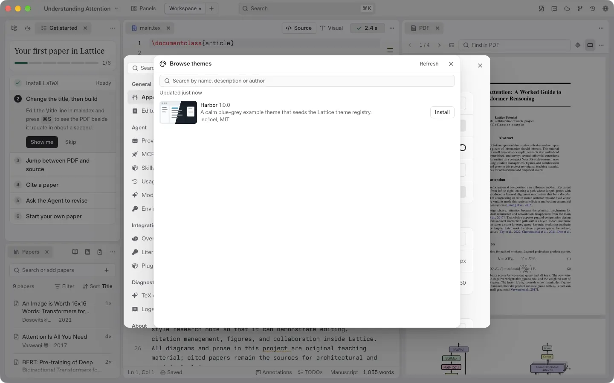
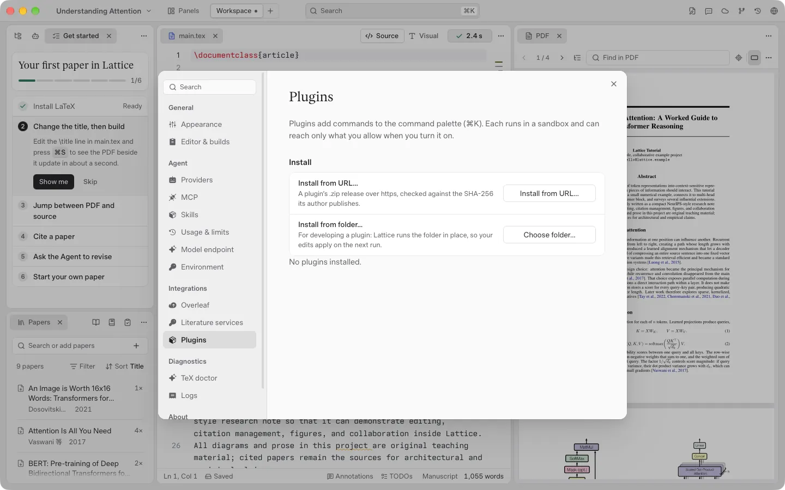

Plugins and themes
Themes
Open Settings › Appearance. Under Theme you can pick a built-in theme, light or dark, or:
- Browse themes…: themes others have published. Choose Install on one, then pick it from your themes.
- Install from file…: a theme file you were given.
- Show themes folder: where your installed theme files live.

The editor's syntax colors are set separately under Code theme on the same page.
Plugins
Plugins add commands to the command palette (⌘K). Each runs in a sandbox and can reach only what you allow when you turn it on.
Open Settings › Plugins:
- Install from URL…: a plugin's
.ziprelease overhttps, checked against the SHA-256 its author publishes. - Install from folder…: for developing a plugin; Lattice runs the folder in place, so your edits apply on the next run.

A new plugin is off until you turn it on. Turning it on lists the permissions it asks for; if an update asks for more, Lattice asks again. Remove a plugin from the same page. Plugins run on macOS only for now.
Writing a plugin? See the plugin developer docs.